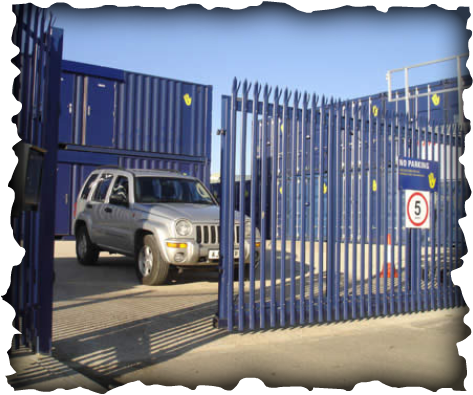

Rolling Gate - Installation, Repair and Maintenance
Rolling Gate - Installation, Repair and Maintenance
New Jersey Steel Gates Services
Our Professional technicians provides Garage Doors Repair services to these major cities in New Jersey:
• Allendale • Alpine • Bergenfield • Bloomingdale • Bogota • Carlstadt • Cliffside Park • Clifton • Closter • Cresskill •Demarest • Dumont • East Rutherford • Edgewater • Elmwood Park • Emerson • Englewood • Englewood Cliffs •Fair Lawn • Fairview • Fort Lee • Franklin Lakes • Garfield • Glen Rock • Hackensack • Haledon • Harrington Park •Hasbrouck Heights • Haworth • Hawthorne • Hillsdale • Ho-Ho-Kus • Leonia • Little Falls • Little Ferry • Lodi •Lyndhurst • Mahwah • Maywood • Midland Park • Montvale • Moonachie • New Milford • North Arlington • North Haledon • Northvale • Norwood

• Oakland • Old Tappan • Oradell • Palisades Park • Paramus • Park Ridge •Passaic • Paterson • Phillipsburg • Pompton Lakes • Prospect Park • Ramsey • Ridgefield • Ridgefield Park •Ridgewood • Ringwood • River Edge • River Vale • Rochelle Park • Rockleigh • Rutherford • Saddle Brook •Saddle River • South Hackensack • Teaneck • Tenafly • Teterboro • Totowa • Upper Saddle River • Waldwick •Wallington • Wanaque • Washington • Washington Township • Wayne • West Milford • West Paterson • Westwood• Wood-Ridge • Woodcliff Lake • Wyckoff •
We provide fixing, repair and maintenance services to our hundreds of customers in New Jersey area, in any garage door problem or emergency, including trouble in the following: Extension springs , torsion springs, door Angles, cable drums, spring fittings, lift handles, cables, rollers, top bottom and jamb brackets, locks, hinges, bottom seals, cables & rollers, track, garage remote Control Shutters.
- Same Day and 24 Hour Emergency Service
- Limited Lifetime Warranty
- Highest Quality Garage Door Parts
- Trained, Certified and Uniformed Technicians
- New Garage Door Sales and Installation
- Garage Door Opener Sales and Installation
- Garage Door Accessories
- We Fix Broken Springs, Cables and Rollers
- Electric Gate Openers
- Gate Control Devices
- Telephone Intercom Systems
- Gate Accessories